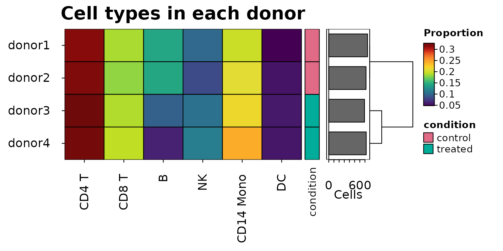
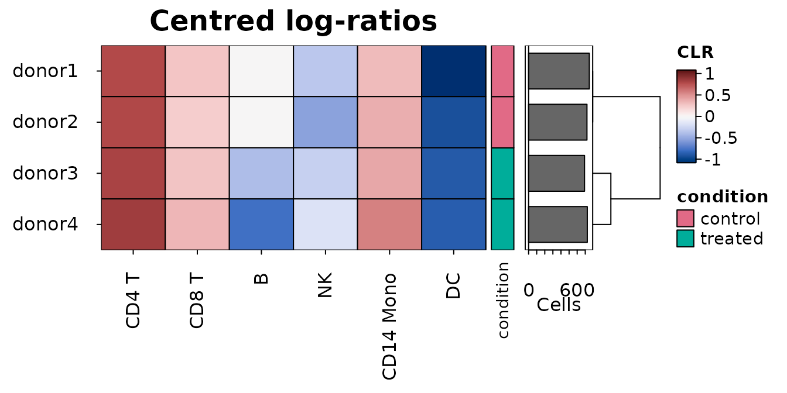
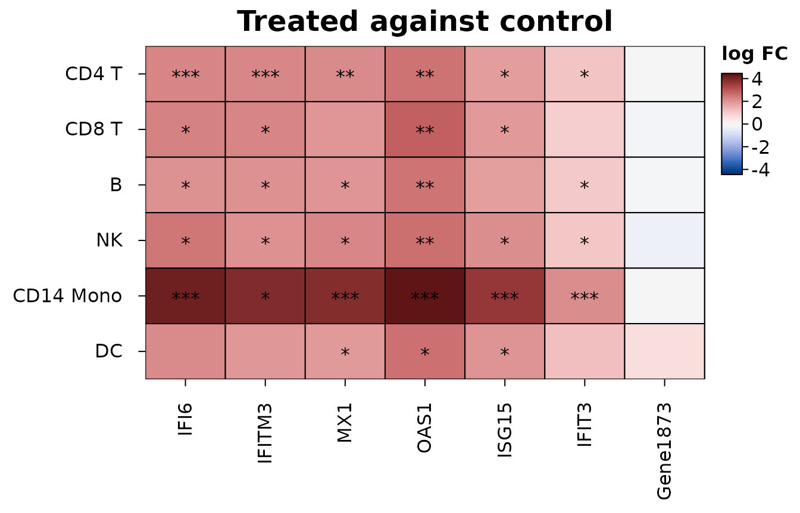
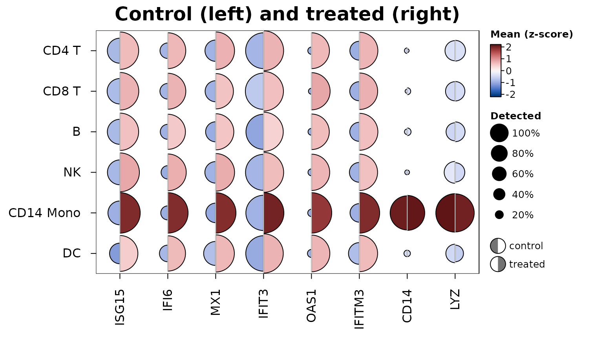
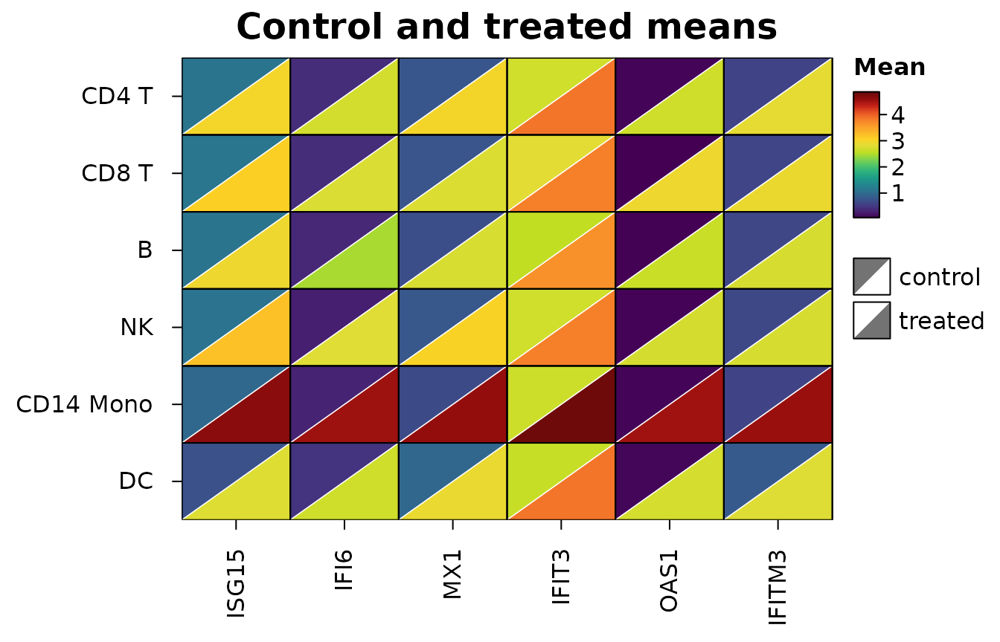
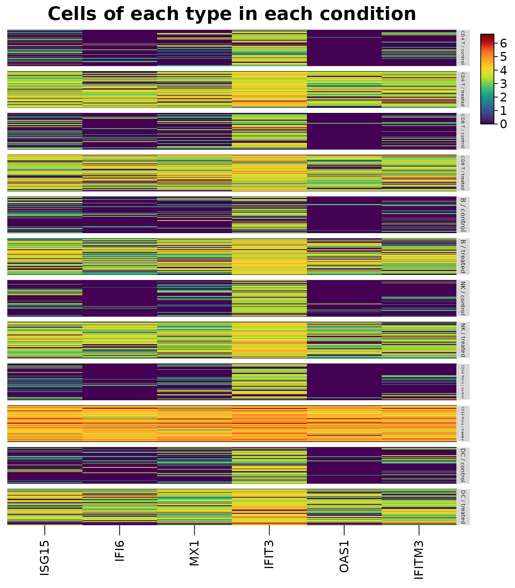
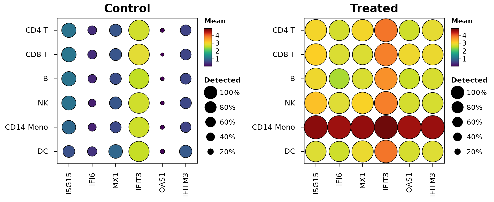

Most single-cell experiments compare conditions: treated and control, disease and health, before and after. The cells of one sample aren’t independent replicates of the condition, so tests that treat each cell as one find tiny differences significant once there are enough cells. Only differences that hold from one sample to the next are real (Squair et al. 2021). This guide compares conditions with the samples as replicates. It asks two questions: whether the make-up of the samples changes, and which genes change in each cell type. It then shows the changes in dot plots, split cells and panels on one scale.
The data
The blood cells of the single-cell guide come from four donors, two of them treated, but the simulation has no effect of the treatment. To give the plots something to find, we add one to a copy of the data. Six of the background genes are renamed after genes of the interferon response and raised in every cell of the treated donors, most in the monocytes. Half of the treated donors’ B cells are also removed:
library(HeatmapR)
library(SingleCellExperiment)
sce <- heat_map_example("rna", class = "SingleCellExperiment")
# AN EFFECT OF THE TREATMENT, ADDED TO THE SIMULATION
set.seed(1)
isg <- c("ISG15", "IFI6", "MX1", "IFIT3", "OAS1", "IFITM3")
rownames(sce)[25:30] <- isg
treated <- sce$condition == "treated"
counts <- counts(sce)
for(gene in isg) {
counts[gene, ] <- counts[gene, ] +
rpois(ncol(sce), ifelse(treated, ifelse(sce$cell_type == "CD14 Mono", 6, 1.5), 0))
}
counts(sce) <- counts
logcounts(sce) <- log1p(t(t(counts) * 1e4 / Matrix::colSums(counts)))
lost <- which(treated & sce$cell_type == "B")
sce <- sce[, -lost[c(TRUE, FALSE)]]
table(sce$cell_type, sce$sample)
#>
#> donor1 donor2 donor3 donor4
#> CD4 T 238 231 226 235
#> CD8 T 142 132 132 141
#> B 108 104 67 46
#> NK 77 61 75 84
#> CD14 Mono 149 152 150 177
#> DC 36 41 41 42The make-up of samples
heat_map_composition() counts the cells of each group in
each sample and draws the share of each sample’s cells in each group.
The samples are clustered by their make-up and annotated by their
metadata, with their numbers of cells beside them. Only the metadata of
the cells is read, so it works on any single-cell data, or on a data
frame of the cells’ metadata.
heat_map_composition(sce, group_by = "cell_type", sample_by = "sample",
annotation_by = "condition",
title = "Cell types in each donor")
Shares add up to one in each sample, so a group that shrinks raises
the share of every other group: the loss of B cells in the treated
donors makes the other types a little more common there.
values = "clr" draws centred log-ratios instead: the log of
each group’s share less the mean log share of the sample (Aitchison
1982). Each group’s value then no longer depends on the others, and the
samples are clustered on distances suited to compositions:
heat_map_composition(sce, group_by = "cell_type", sample_by = "sample",
annotation_by = "condition", values = "clr",
title = "Centred log-ratios")
values = "count" and "percent" draw the
numbers of cells and percentages, and cell_text = TRUE
writes the values in the cells. heat_map_composition()
draws the make-up of samples rather than testing it; with four donors
any test of the change in B cells would have little power.
Pseudobulk tests
heat_map_contrast() compares two conditions in each
group of cells with the samples as the replicates. The cells of each
group in each sample are summarised into one value, and the samples of
the two conditions are compared feature by feature with moderated
t-tests (Smyth 2004). Each feature’s variance among the samples is
shrunk towards a prior estimated from all the features of the group,
which steadies tests of the few samples experiments have. The p-values
are adjusted within each group (Benjamini and Hochberg 1995).
The heatmap shows the difference of each feature in each group, here
the log fold change of treated against control, on a diverging scale.
Cells get stars for adjusted p-values below 0.05, 0.01 and 0.001.
Without features, every gene is tested and the
n (5) with the smallest adjusted p-values in each group are
drawn:
contrast <- heat_map_contrast(sce, group_by = "cell_type",
condition_by = "condition", sample_by = "sample",
title = "Treated against control")
The results of every test are in the "contrast"
attribute, or are returned with draw = FALSE:
results <- attr(contrast, "contrast")
head(results[order(results$p_value), ], 4)
#> Differences of treated from control in 6 groups (pseudobulk moderated t-tests across samples); 4 of 4 with an adjusted p-value below 0.05.
#>
#> group feature logfc t p_value p_adj mean_test mean_reference
#> CD14 Mono MX1 3.92 122.0 1.11e-07 0.000167 4.61 0.6884
#> CD14 Mono OAS1 4.45 104.4 1.96e-07 0.000167 4.55 0.0969
#> CD14 Mono ISG15 3.68 83.6 4.38e-07 0.000243 4.67 0.9948
#> CD14 Mono IFI6 4.22 77.7 5.71e-07 0.000243 4.56 0.3379
#> samples_test samples_reference cells
#> 2 2 628
#> 2 2 628
#> 2 2 628
#> 2 2 628
sum(results$p_adj < 0.05, na.rm = TRUE)
#> [1] 30
table(results$feature[which(results$p_adj < 0.05)])
#>
#> IFI6 IFIT3 IFITM3 ISG15 MX1 OAS1
#> 5 4 5 5 5 6Only the six raised genes pass, each in some or all of the cell types; none of the 1,994 other genes does. The settings of the test:
-
values = "mean"(default) compares the mean of each sample’s cells of log-normalised values, so the difference is a log fold change in the units of the data. For cytometry,transform = "asinh"transforms the intensities first. -
values = "logcpm"sums the counts of each sample’s cells (assay = "counts") and compares their log2 counts per million, as limma-voom and edgeR pseudobulk analyses do. Genes with fewer thanmin_countscounts in too many samples aren’t tested, as edgeR’sfilterByExpr()leaves them out. -
min_cellssets the smallest number of cells of a group in a sample for the sample to be compared (10). -
contrast = c("treated", "control")names the test and reference conditions. By default the second level is tested against the first. -
featureschooses the features to test and draw, andstars = NULLleaves out the stars.
The two values can disagree with few samples. With two donors in each condition, the summed counts pass fewer genes here:
logcpm <- heat_map_contrast(sce, group_by = "cell_type",
condition_by = "condition", sample_by = "sample",
assay = "counts", values = "logcpm", draw = FALSE)
sum(logcpm$p_adj < 0.05, na.rm = TRUE)
#> [1] 5Seeing the changes
A test says which genes change; plots of the cells show by how much, in how many cells, and in which cell types.
Split dots
heat_map_dot(split_by = ) splits each dot down the
middle by a variable with two values. The left half shows the cells of
the group in the first condition and the right half those in the second.
Each half is coloured by its mean, scaled within each gene across the
groups and both conditions, and sized by the share of its cells in which
the gene is detected:
heat_map_dot(sce, features = c(isg, "CD14", "LYZ"), group_by = "cell_type",
split_by = "condition", title = "Control (left) and treated (right)")
Split cells
A heatmap can do the same with cell_split, a second
matrix of values drawn in the lower right half of each cell. The value
in the data fills the upper left half. Here the mean of each gene in
each cell type, control above and treated below, on one colour
scale:
control_means <- heat_map_summarise(sce[, sce$condition == "control"],
features = isg, group_by = "cell_type")
treated_means <- heat_map_summarise(sce[, sce$condition == "treated"],
features = isg, group_by = "cell_type")
heat_map(control_means, cell_split = treated_means,
cell_split_labels = c("control", "treated"),
legend_title = "Mean", title = "Control and treated means")
Cells of each condition
group_by with two columns groups the cells by their
combinations, so a heatmap of cells puts the control and treated cells
of each type next to each other:
heat_map(sce, features = isg, group_by = c("cell_type", "condition"),
group_max = 60, axis_text_y = NA,
title = "Cells of each type in each condition")
Panels on one scale
Plots drawn separately, e.g. one per condition, each stretch their
colours over their own values, so the same colour can mean different
things in each. heat_map_arrange() redraws plots in one
layout on shared colour limits and dot sizes, so they can be compared by
eye. Here are dot plots of the means themselves
(scale = "none") in each condition:
control_dots <- heat_map_dot(sce[, sce$condition == "control"], features = isg,
group_by = "cell_type", scale = "none",
title = "Control")
treated_dots <- heat_map_dot(sce[, sce$condition == "treated"], features = isg,
group_by = "cell_type", scale = "none",
title = "Treated")
heat_map_arrange(control_dots, treated_dots)
Cytometry
The cytometry guide compares conditions in cytometry data the same way: the abundance of each cluster in each sample, the median of each cluster in each sample (differential states), split dots and contrasts of the asinh-transformed intensities.
References
Aitchison, J. (1982). The statistical analysis of compositional data. Journal of the Royal Statistical Society: Series B, 44(2), 139-160. doi:10.1111/j.2517-6161.1982.tb01195.x
Benjamini, Y. and Hochberg, Y. (1995). Controlling the false discovery rate: a practical and powerful approach to multiple testing. Journal of the Royal Statistical Society: Series B, 57(1), 289-300. doi:10.1111/j.2517-6161.1995.tb02031.x
Smyth, G. K. (2004). Linear models and empirical Bayes methods for assessing differential expression in microarray experiments. Statistical Applications in Genetics and Molecular Biology, 3(1), Article 3. doi:10.2202/1544-6115.1027
Squair, J. W. et al. (2021). Confronting false discoveries in single-cell differential expression. Nature Communications, 12, 5692. doi:10.1038/s41467-021-25960-2